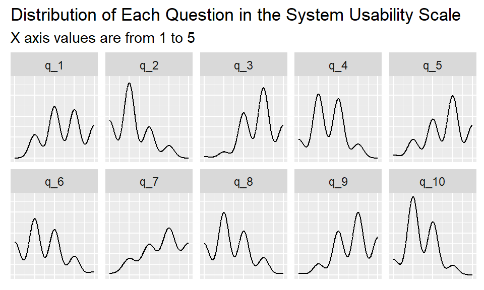

library(tidyverse)data <- read.csv("../../data/sample_data.csv")
data <- data |> select(-1)psych::describe(data) |>
select(-vars) |>
knitr::kable()| n | mean | sd | median | trimmed | mad | min | max | range | skew | kurtosis | se | |
|---|---|---|---|---|---|---|---|---|---|---|---|---|
| q_1 | 100 | 3.580 | 0.9865766 | 4.0 | 3.60000 | 1.4826 | 2 | 5.0 | 3.0 | -0.0330908 | -1.0624148 | 0.0986577 |
| q_2 | 100 | 2.120 | 0.8678314 | 2.0 | 2.05000 | 1.4826 | 1 | 4.0 | 3.0 | 0.5046826 | -0.3606769 | 0.0867831 |
| q_3 | 100 | 3.810 | 0.8491826 | 4.0 | 3.83750 | 1.4826 | 1 | 5.0 | 4.0 | -0.4184141 | 0.0756473 | 0.0849183 |
| q_4 | 100 | 2.440 | 0.8204458 | 2.0 | 2.43750 | 1.4826 | 1 | 4.0 | 3.0 | 0.0274649 | -0.5684858 | 0.0820446 |
| q_5 | 100 | 3.660 | 1.0072465 | 4.0 | 3.72500 | 1.4826 | 1 | 5.0 | 4.0 | -0.4660038 | -0.4328810 | 0.1007246 |
| q_6 | 100 | 2.380 | 1.0128468 | 2.0 | 2.32500 | 1.4826 | 1 | 5.0 | 4.0 | 0.3535426 | -0.5476011 | 0.1012847 |
| q_7 | 100 | 3.720 | 1.0158342 | 4.0 | 3.78750 | 1.4826 | 1 | 5.0 | 4.0 | -0.4005728 | -0.7245773 | 0.1015834 |
| q_8 | 100 | 2.330 | 0.9540451 | 2.0 | 2.27500 | 1.4826 | 1 | 5.0 | 4.0 | 0.3477466 | -0.5246394 | 0.0954045 |
| q_9 | 100 | 3.790 | 0.9243616 | 4.0 | 3.85000 | 1.4826 | 1 | 5.0 | 4.0 | -0.4150614 | -0.3306047 | 0.0924362 |
| q_10 | 100 | 2.360 | 0.7456270 | 2.0 | 2.37500 | 0.7413 | 1 | 4.0 | 3.0 | 0.1903611 | -0.2772442 | 0.0745627 |
| sus | 100 | 67.325 | 6.9654178 | 67.5 | 67.53125 | 7.4130 | 45 | 82.5 | 37.5 | -0.3558209 | 0.2344744 | 0.6965418 |
labels <- tribble(
~var, ~label,
"q_1", "I think that I would like to use this system frequently",
"q_2", "I found the system unnecessarily complex",
"q_3", "I thought the system was easy to use",
"q_4", "I think that I would need the support of a technical person to be able to use this system",
"q_5", "I found the various functions in this system were well integrated",
"q_6", "I thought there was too much inconsistency in this system",
"q_7", "I would imagine that most people would learn to use this system very quickly",
"q_8", "I found the system very cumbersome to use",
"q_9", "I felt very confident using the system",
"q_10", "I needed to learn a lot of things before I could get going with this system"
)data_long <- data |>
select(-sus) |>
gather() |>
rename(var = key) |>
mutate(text = case_match(
value,
1 ~ "Strongly disagree",
2 ~ "Somewhat disagree",
3 ~ "Neither",
4 ~ "Somewhat agree",
5 ~ "Strongly agree"
)) |>
left_join(labels, by = "var") |>
select(var, label, value, text)data_long <- data_long |> mutate(var = fct_inorder(var))data_long |>
ggplot(aes(x = value)) +
geom_density() +
facet_wrap(~var, ncol = 5) +
labs(
title = "Distribution of Each Question in the System Usability Scale",
x = NULL, y = NULL,
subtitle = "X axis values are from 1 to 5"
) +
theme(
axis.text = element_blank(),
axis.ticks = element_blank()
)
Reverse code this so it runs in the same direction